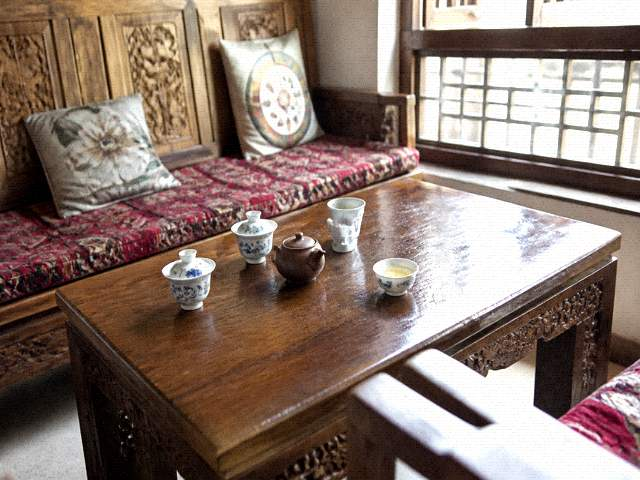

DutyBook transcript
Tongxian Experimental Troupe2014-08-21

Night show 2014-08-21. Stagehand: DiHou (on leave). Temporary Extra: ShenNan 13972810834 source: travel list.
Source written as travel list means the number synced over from Tourism. The number is in the book. The person is still in East Row 7. Being in East Row 7 still counts as a role.
MaJu's old row has been struck. When it was struck, three books were complete. Tonight's row, nobody has come to complete them.
ChengShi endorsement: Stagehand missing, Extra used to make CurtainUp. After CurtainUp, no refund.
This transcript only establishes that the number is on the book. That ShenNan went on stage is not established by these sources. Whether DiHou's funeral leave is true or false is not established by these sources. The leave slip is on another page.
DutyBook transcript. Copied from the west-wing night-show book. The copyist was not ChengShi. ChengShi only endorsed the last line. Hands compared as follows.
Night show 2014-08-21. Stagehand: DiHou (on leave). The two words on leave are ChengShi's hand. Short. Through the paper. Temporary Extra: ShenNan 13972810834 source: travel list. Source written as travel list means the number synced over from Tourism. The number is in the book. The person is still in East Row 7. Being in East Row 7 still counts as a role. This row is thinner than ChengShi. Thin is accounting filling in. Accounting filled it, pushed the book back. Pushed back, then ChengShi endorsed. MaJu's old row has been struck. Struck in red. Diagonal. Struck the day three books were complete. After the strike, that IncenseAccount stick was later traced back. The tracing is not in this book. Tonight's row, nobody has come to complete them. ChengShi endorsement: Stagehand missing, Extra used to make CurtainUp. After CurtainUp, no refund. Endorsed at the end of the row. No date. No circle. This transcript only establishes that the number is on the book. That ShenNan went on stage is not established by these sources. Whether DiHou's funeral leave is true or false is not established by these sources. The leave slip is on another page. The carbon paper is the yellowed kind. The third copy is faint. Faint, 1397 can still be read. The middle digits need light. Even with light, do not trace the faint strokes solid. Traced solid does not count as the original. The original is in the west wing. This book in the west wing is not lent out. At copy time accounting used a warm-yellow desk lamp. Faint 1397 can be read. Middle 2810 has to be looked at slantwise. Slantwise, still no tracing. Trace it and this transcript is void. The source column is preprinted. Beside it, handwritten Tourism sync. There is no clock on this book. Clock the order page against 16:02. ChengShi endorsed at the end. No circle. The leave slip got a circle. The book gets words. Words count as endorsement. This transcript only establishes that there is a number. A number is not the person on stage.